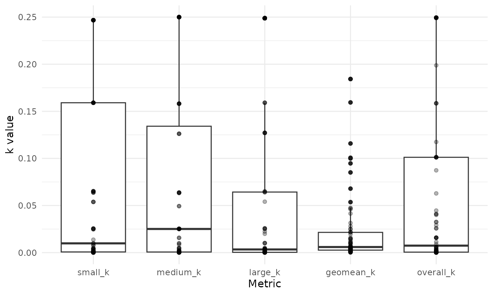
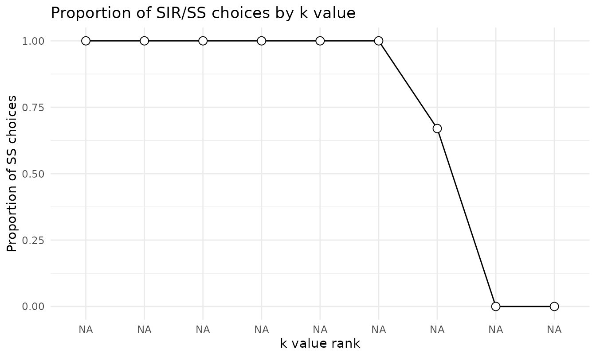

Scoring the 27-Item Monetary Choice Questionnaire
Brent Kaplan
Source:vignettes/mcq27-scoring.Rmd
mcq27-scoring.RmdThe questionnaire
The Monetary Choice Questionnaire (MCQ; Kirby, Petry & Bickel,
1999) is the most widely used paper-and-pencil measure of delay
discounting. Each item asks the respondent to choose between a smaller
reward available immediately and a larger reward available after a
delay, for example “Would you prefer $54 today or $55 in 117 days?” The
27 items are constructed so that the implied indifference points sweep
across a wide range of discount rates and three reward magnitudes
(small, medium, large). The pattern of choices a person makes estimates
their discount rate k in Mazur’s (1987) hyperbola,
V = A / (1 + k * D).
Scoring the MCQ by hand is tedious and error-prone.
beezdiscounting automates the procedure described in Kaplan
et al. (2016), returning k overall and by magnitude, along
with the consistency and choice-proportion diagnostics you need to judge
whether a respondent’s pattern is interpretable.
Data format
score_mcq27() expects long-format data with one row per
item per respondent and exactly three columns: subjectid,
questionid (1–27), and response. The package
includes a small example, mcq27, with two respondents:
data(mcq27)
str(mcq27)
#> 'data.frame': 54 obs. of 3 variables:
#> $ subjectid : num 1 1 1 1 1 1 1 1 1 1 ...
#> $ questionid: num 1 2 3 4 5 6 7 8 9 10 ...
#> $ response : num 0 0 0 1 1 0 1 1 0 0 ...
head(mcq27, 9)
#> subjectid questionid response
#> 1 1 1 0
#> 2 1 2 0
#> 3 1 3 0
#> 4 1 4 1
#> 5 1 5 1
#> 6 1 6 0
#> 7 1 7 1
#> 8 1 8 1
#> 9 1 9 0Responses are coded 0 when the person chose the smaller,
immediate reward and 1 when they chose the larger, delayed
reward. A respondent who almost always takes the immediate money is a
steep discounter (large k); one who waits for the larger
reward is a shallow discounter (small k).
The 27 items and the discount rates they bracket are fixed by the Kirby design. You can inspect that lookup table directly:
head(get_lookup_table())
#> questionid magnitude kindiff k_rank ss_amount ll_amount delay
#> 1 13 S 0.000158128 0.00016 34 35 186
#> 2 1 M 0.000158278 0.00016 54 55 117
#> 3 9 L 0.000158278 0.00016 78 80 162
#> 4 20 S 0.000399042 0.00040 28 30 179
#> 5 6 M 0.000398936 0.00040 47 50 160
#> 6 17 L 0.000398089 0.00040 80 85 157Each item belongs to a magnitude band (magnitude: small,
medium, or large) and sits at one of nine indifference k
ranks (k_rank), defined by its smaller-immediate amount
(ss_amount), larger-delayed amount
(ll_amount), and delay in days.
Scoring
score_mcq27() returns one row per respondent:
scores <- score_mcq27(mcq27)
scores
#> subjectid overall_k small_k medium_k large_k geomean_k overall_consistency
#> 1 1 0.065212 0.025565 0.063690 0.064947 0.047289 0.962963
#> 2 2 0.000399 0.000633 0.001589 0.000251 0.000632 0.962963
#> small_consistency medium_consistency large_consistency composite_consistency
#> 1 1 1 1 1
#> 2 1 1 1 1
#> overall_proportion small_proportion medium_proportion large_proportion
#> 1 0.259259 0.333333 0.222222 0.222222
#> 2 0.777778 0.777778 0.666667 0.888889
#> impute_method
#> 1 none
#> 2 noneThe output carries three families of columns:
-
Discount rates.
overall_kis the single discount rate that best matches the full set of choices;small_k,medium_k, andlarge_kare estimated within each magnitude band;geomean_kis the geometric mean of the three magnitude-specific rates. Discount rates are strongly right-skewed, which is why the geometric mean is the conventional summary. -
Consistency.
overall_consistency(and the per-magnitude versions) is the proportion of the respondent’s choices that agree with the estimatedk. Values near 1 mean the choices form a clean switch from delayed to immediate as the impliedkincreases; low values signal a noisy or inattentive respondent whosekshould be interpreted cautiously. -
Choice proportions.
overall_proportionand its per-magnitude versions give the proportion of larger-delayed choices, a quick, model-free index of patience.
Summarizing a sample
Two respondents are enough to show the mechanics but not to describe
a sample. To illustrate the summary tools, simulate a larger set of
respondents with generate_data_mcq(), score them, and
summarize across people with summarize_mcq():
sim <- generate_data_mcq(n_ids = 80)
sim_scores <- score_mcq27(sim)
summarize_mcq(sim_scores)
#> # A tibble: 10 × 4
#> Metric Mean SD SEM
#> <chr> <dbl> <dbl> <dbl>
#> 1 overall_k 0.0595 0.0882 0.00986
#> 2 small_k 0.0676 0.0924 0.0103
#> 3 medium_k 0.0707 0.0947 0.0106
#> 4 large_k 0.0519 0.0860 0.00962
#> 5 geomean_k 0.0227 0.0398 0.00445
#> 6 overall_consistency 0.632 0.0617 0.00690
#> 7 small_consistency 0.700 0.111 0.0124
#> 8 medium_consistency 0.710 0.104 0.0116
#> 9 large_consistency 0.729 0.112 0.0125
#> 10 composite_consistency 0.713 0.0597 0.00667summarize_mcq() returns the mean, standard deviation,
and standard error of the k and consistency metrics across respondents.
The plot() method for a scored object shows the
distribution of k across magnitudes:
plot(sim_scores)
A model-free look at the choice gradient
prop_ss() reports the proportion of smaller-immediate
choices at each of the nine k ranks, pooled across whatever
respondents you pass it. For a single respondent, three items sit at
each rank (one per magnitude), which gives a quick picture of where,
along the discount-rate continuum, that person switches from waiting to
taking the immediate reward:
s1 <- subset(mcq27, subjectid == 1)
prop_ss(s1)
#> # A tibble: 9 × 2
#> k_rank prop_ss
#> <dbl> <dbl>
#> 1 0.00016 1
#> 2 0.0004 1
#> 3 0.001 1
#> 4 0.0025 1
#> 5 0.006 1
#> 6 0.016 1
#> 7 0.041 0.67
#> 8 0.1 0
#> 9 0.25 0
plot(prop_ss(s1))
Converting between layouts
Raw MCQ data arrive in different shapes.
wide_to_long_mcq() and long_to_wide_mcq() move
between a wide layout (one column per item) and the long layout
score_mcq27() expects:
wide <- long_to_wide_mcq(mcq27)
dim(wide)
#> [1] 2 28
long <- wide_to_long_mcq(wide)
head(long, 3)
#> # A tibble: 3 × 3
#> subjectid questionid response
#> <dbl> <int> <dbl>
#> 1 1 1 0
#> 2 1 2 0
#> 3 1 3 0wide_to_long_mcq_excel() and
long_to_wide_mcq_excel() handle the column layout used by
the published Excel automated scorer, which lets data prepared for that
tool be read in without reformatting.
Handling missing responses
When a respondent leaves items blank, the impute_method
argument controls how the NA responses are handled:
"none" (the default; they stay NA),
"ggm" (geometric grand-mean handling, which drops
NAs when forming geomean_k), or
"inn" (item nearest-neighbor imputation, following Yeh et
al., 2023, which can still leave a value unresolved unless
random = TRUE). Every respondent must still have all 27
items present as rows; impute_method governs only the
NA responses within them, not missing rows.
From choices to trial-level data
Because the MCQ is a choice task, its items can also feed the
structural choice models in beezdiscounting.
mcq27_to_choice() reshapes the responses into the
trial-level frame those models expect:
head(mcq27_to_choice(mcq27))
#> # A tibble: 6 × 5
#> id ss_amount ll_amount delay choice
#> <chr> <dbl> <dbl> <dbl> <dbl>
#> 1 1 54 55 117 0
#> 2 1 55 75 61 0
#> 3 1 19 25 53 0
#> 4 1 31 85 7 1
#> 5 1 14 25 19 1
#> 6 1 47 50 160 0The result (one row per trial with the smaller and larger amounts,
the delay, and the binary choice) is ready for
fit_dd_choice(). See the choice-modeling and TMB vignettes
for that workflow.
References
- Kaplan, B. A., Amlung, M., Reed, D. D., Jarmolowicz, D. P., McKerchar, T. L., & Lemley, S. M. (2016). Automating scoring of delay discounting for the 21- and 27-item monetary choice questionnaires. The Behavior Analyst, 39, 293–304.
- Kirby, K. N., Petry, N. M., & Bickel, W. K. (1999). Heroin addicts have higher discount rates for delayed rewards than non-drug-using controls. Journal of Experimental Psychology: General, 128(1), 78–87.
- Mazur, J. E. (1987). An adjusting procedure for studying delayed reinforcement. In The effect of delay and of intervening events on reinforcement value (pp. 55–73). Lawrence Erlbaum Associates.
- Yeh, Y. H., Tegge, A. N., Freitas-Lemos, R., Myerson, J., Green, L., & Bickel, W. K. (2023). Discounting of delayed rewards: Missing data imputation for the 21- and 27-item monetary choice questionnaires. PLOS ONE, 18(10), e0292258.